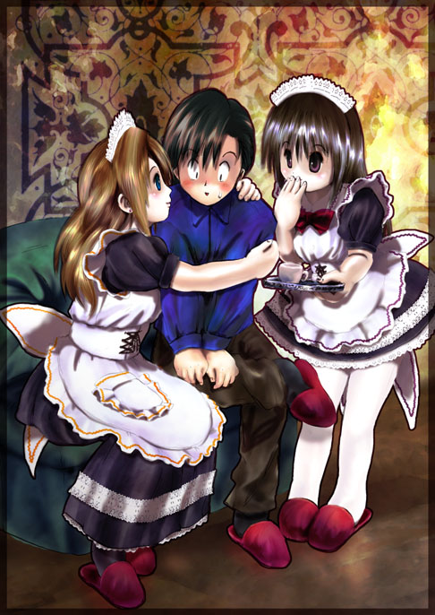

|
『んぁっ・・胸っ・・・』
突如液晶モニターに映し出された不思議な言葉。
今までの会話とは違い、明らかにぎこちない出力である。まるで機械自体が表示すべきか迷いながら出しているといった雰囲気の文字の出方と、出た後ですぐにキャンセルされたと思われる消し方を見ると、彼女らが会話をしようとして発した言葉ではないようだった。
『胸』と言う言葉が気になりマユに目線を移すが特に変わった様子はない。
ただ強いて言えばマユは許しを請うために手を胸の前で握って、お願いのポーズを取っているだけである。意図的なのかわざとなのかは分からないが、手を胸の谷間に埋めるようにして胸を強調している事も確かである。
とは言っても、それは彼女の数々の挑発からすればたいした行為ではなく、いってみれば普通の動作である。
だいいち、手を胸の谷間に埋めたぐらいで『胸』と言う単語を表示する程の事情がマユに存在するとは思えない。
見せつけられる男性にとっては凄く挑発的な行為かも知れないが、女性にとってはそれほど大変なことをしているとも思えないのだ。
胸がどうしたのかは分からないが、様子を見る限りどうと言うこともなく、やはり液晶機の単なる誤動作のように思えた。
それにしてもマユは、まるでインベーダーのように、お願いポーズを取りながら徐々に浅川に近づいてくる。
「だぁぁ・・分かった分かった、分かったからもうそのお願いは勘弁してくれ！」
『ほんと？』
「ああ。ホントだ。機嫌直すから。」
『うん！！』
結局浅川は妥協して、マユ達と休戦することにした。
マユは一瞬だけ、ふっ、と肩の力を抜き、すぐに言葉を続ける。
『じゃあご主人様。お疲れでしょうから、何か飲み物とデザートでもお持ちしますか？』
「ん？あ、ああ。じゃあなんか頼むよ。」
いよいよマユ達の奉仕が始まったようだ。
２人はキッチンに向かうと、まずはマナが冷蔵庫からケーキらしい物を取り出し、皿に盛りつけている。
マユは電気調理器で沸かしたらしいお湯でコーヒーを入れる香りがする。
もちろん、この間も、キッチンにいる２人は一切手抜きすることなくマユとマナで居続けている。少しは苦しそうな態度や切なそうな態度を見せるのではないかと、期待して観察しても、２人は全くそんな態度を取ることはない。
しばらくするとマナがトレーを持ち、マユと共に浅川の前に持ってきて、テーブルの上に置く。
『ベークド・チーズケーキとコーヒーでございます。』

そう言って浅川の前にケーキとホットコーヒーが並べられる。
コーヒーに砂糖だけを入れ、かき回すと、ずずずっと一口飲む。
「うん。美味い」
香ばしいコーヒーの香りがなかなか良く出ていて美味かった。
マユ達は手を叩いて喜ぶ。
そしてケーキにフォークを入れ、口に運ぶ。
「これもいいね。美味いよ。」
チーズの香りとスポンジの食感が絶妙で、これまた浅川の口に良くあった。
もちろんマユ達も喜んでいる。
『うれしい！ご主人様に喜んで貰えて良かった！』
ホントに嬉しそうなその様子には、苦笑するしかなかった。
「確かに美味いんだけどさ。君たち、今日もずっと食事しない気？君らだって年頃の女の子なんだろうからこういうの嫌いじゃないんだろ？」
『ぶーぶー。女の子’なんだろうから’じゃなくて、見ての通り女の子なの！でもお人形だから食べられないの。』
少しでも本音を引き出そうとするが、やはり上手くはぐらかされてしまう。
『それより、食べ終わったらゲームでもしませんか？夜のお食事にはまだ時間もあるし。』
おやつをいただきながら、マユはゲームを提案してきた。確かに夕食まではまだ時間もたっぷりある。時間をつぶす遊びがあれば、少しでも彼女たちのことを考えなくてすむかも知れない。
「ゲームか。どんなゲーム？」
『これです。これ。』
そう言ってマユが見せたのは、最新のコンピュータゲームだった。
「これってファミリーＢＯＸ－７じゃん。最新のだよね？」
『ピンポーン。大正解でーす。さっすがご主人様。』
「こんなの誰だって知ってるだろ。おだてても何も出ないぞ。」
『うそよー。ご主人様は白いの出すでしょ～』
「おまえなぁ・・まだ真っ昼間だろうが・・」
確実に浅川を挑発しているマユ。しかも浅川の突っ込みに対してはもの凄く可愛らしく、恥ずかしそうにしている。
「で、本体はあってもソフトが無きゃ遊べんだろ。」
浅川の指摘に、マナが部屋の奥からなにやら機械を持ってくる。
「カメラ？？あとそれは何だ？？」
マナは小型のカメラらしい装置をファミリーＢＯＸ－７に接続し、カメラをテレビの上にのせた。
また、もう一つ、ジャケットのような物にケーブルで繋がっていて、そのケーブルもファミリーＢＯＸ－７に接続された。
『これで身体を使ったゲームが出来るの。』
「身体を使ったゲームって？？」
『今マナちゃんがお手本見せてあげる。』
そう言うとマナはテレビの前に立つ。
マユがゲーム機のブルーレイ・ドライブにディスクをセットし電源を入れると、画面にはタイトルが現れた。
『アクションプレイ』。そう書かれている。
これは確か、カメラに写った自分の身体の動きを入力にしてプレイをするというタイプのゲームなのだが最新モデルはジャケットを着ることでプレイヤーへの体感が可能なのだ。
このジャケットは各部に振動装置やワイヤーの伸縮を利用した疑似圧力発生装置などがあり、例えばレーシングゲームなどでの擬似的なＧの体験が可能になる。
マナはこのジャケットを着て、前のファスナーを閉める。実はこのジャケット、背中の部分にサイズ調整用のひもが何本かあり、胸、ウエスト、腰のサイズをこれで調整して遊ぶのだが、マナの着たジャケットは明らかに小さく、胸などはパツンパツンと言っても良かった。
だがマナは全く気にする様子もなくゲームを始める。
ゲームはいくつかのミニゲームの集まりで、マナはそのうちの一つ、ジャングルパニックを選択する。
ゲームが始まると、画面にはマナの取り込み画像と、背景のジャングルのようなＣＧ、そして、その中に蛇や昆虫などが現れる。マナはゲーム上でそれらを避けたり捕獲したりしながらジャングルを進んでいくと言うストーリーのようだった。
その場で足踏みすると画面が進んで行くらしく、スタスタと足踏みを繰り返し、画面に敵が現れるとさっと避けたり手で叩いて叩き落とす。
最初はどうと言うことのないゲームだが、次第に敵の襲撃が激しくなり前に進みながら攻撃をかいくぐるのが困難になっていくようだ。
それにしてもマナの演技力は抜群で、敵から攻撃を受けてしまった際の悶えっぷりは、迫真に迫るものがあった。浅川はこのゲーム自体は未経験ではあるが、あのジャケットを使った別のゲームは遊んだことがあり、その時の感想から、実際に振動や締め付けは、こそばゆかったり、ちょっと窮屈になる程度で、それほど大げさに騒ぐ程の物ではない。実際の話、子供も使うのであまり強い力はかけられないのだろう。
ジャケットはマナの身体へのサイズ調整が上手くいってないようで、結構窮屈そうであるが、それにしたってたいした振動や締め付けではないはずだ。
その割に、マナの、蛇に絡まれた時や虫がへばりついた時の反応は、まるでＣＧで表現されたキャラクターのような大げさとも言える反応なのである。
だが、演技とはいえかなりリアルに悶えるその姿は、見ていて想像力を働かせずにはいられない物だった。
とくにマナの短めのメイド服から時折見え隠れする下着が、妙に嫌らしく写る。
浅川の推理が正しければ、ああして動き回れば呼吸用の空気も換気出来るからなのだろうと思った。
浅川は、マナの姿に見とれると余計に興奮してしまうと思い、少し目をそらす。すると、傍らにあった液晶画面が、再び怪しい反応を示しているのが分かった。
『あっ・・それは切ないよ・・・』
マナ見つめるマユは特に動いている様子はない。
とすればマナが悶えている姿を見て『切ない』と言いたいのだろうか。
苦しいのならまだ分かるが、切ないとはどういう事なのだろうか。浅川には言葉の意味がさっぱり分からず、やはり脳波を正しく読み取れずに誤動作しているのだろうと思った。
「な・・なぁ。」
浅川の言葉に反応するマユ。
「今、切ないって言わなかった？」
『切ない？そんなこと無いけど、なんで？』
やはりマユ自身も記憶にないようだ。
「いや、いまさ。この画面にちょっとだけそう出て、すぐ消えちゃったんだよ。」
画面を指さして説明する。
『え？や、やだぁ。そんなはず無いわ！多分ノイズとか拾っちゃうのかな。不思議ねー』
マユは否定しているし、その言葉にも、実際の現象にも不自然なところはないのだが、なんとなく焦っているような雰囲気にも見えた。
だがゲームをプレイ中のマナが気になる浅川は、この時点で特にその文字については拘らなかった。
結局マナがゲームオーバーになるまで、約１０分間かかった。手本としては、まぁ無難だったと言う事だろうか。
「じゃあ次は俺やってみていい？」
『うん。じゃご主人様の番ね！』
マユに送り出されて、テレビの前に立ち、マナから受け取ったジャケットを着る。
何も考えずにジャケットを着てしまった浅川だが、あまりに窮屈な事に気づく。
マナの体格を考えると当然だが、とても男性の浅川には着れるサイズではない。特にあばら骨の付近は、体型を補正してもどうにもならない体格の差というのを見せつけられた気がした。
これではゲームにならないので、いったんジャケットを脱いでサイズをゆるめ、再び着てゲームを始める。
プレイすると、敵からの攻撃は予想通り、それほど激しい振動ではなくこそばゆいぐらいの振動だったり、ちょっとだけ蛇やツタの類に絡まれた時に締め付けられる感じはあるが、別段着ていて辛いと言うことはない。
だが、意外と運動量があることに気づく。
マナは１０分程でゲームオーバーだったが、浅川は初めてやったにもかかわらず、その倍ぐらいのプレイ時間を楽しむ。しかし、マナを着込んで１０分この動きを続けていたとすると、決してあのマナの中は楽ではないはずだと思った。
もちろん浅川がプレイしていると、傍らで２人は一生懸命応援しているようだ。
可愛い人形に応援されて、悪い気はしない浅川だが、やはりマナのことが気になって、最後は集中出来ずに負けてしまう。しかも、普通に応援という訳ではなく、言葉は話せない分、ボディーアクションで懸命に応援している様子が、浅川の集中力を奪っていた。
『あーあ。ご主人様。おしかったですねー。あの敵を切り抜けたら次のエリアなのにー』
「ふぅ。まぁいいよ。結構楽しかったし、また次のプレイで挑戦してやるさ。」
『ご主人様、強気ですねー。よーし私もがんばろ！』
「ははは。頑張ってこいよー」
浅川の応援にガッツポーズを決め、颯爽と画面に立つマユ。
ジャケットのサイズを調整して、ウエストはマナの着ていた時に戻して着込む。するとマナよりもさらに胸が苦しそうにフィットするが、全く気にする様子はない。
ただ、例の液晶画面にはチラッとだけ
『ぁん・・・締まるっ・・』
と表示されたのが見えた。
|
|